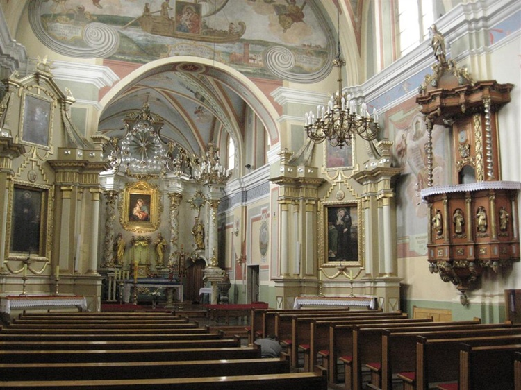

Zespó³ klasztorny Bernardynów
Zespó³ klasztorny za³o¿ony przez bernardynów w XVII i XVIII w. sk³ada siê z barokowych budynków poklasztornych u¿ytkowanych obecnie przez Wojewódzki Szpital dla Nerwowo i Psychicznie Chorych oraz koœcio³a z klasycystycznymi o³tarzami bocznymi i rokokowym o³tarzem g³ównym. Wejœcie do koœcio³a znajduje siê od strony wie¿y bramnej, w której znajduje siê gotycka rzeŸba Matki Boskiej z Dzieci¹tkiem. Koœció³ otoczony jest arkadowym kru¿gankiem, na placu znajduje siê pomnik papie¿a Jana Paw³a II.
